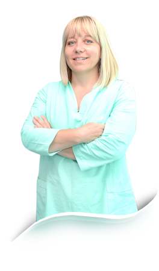

Aličković dr. Amra
specialist of oral surgery
St. Azize Šaćirbegović bb, Sarajevo;
Gsm.: 00 387 61 37 49 67; Tel: +387 (0) 33 64 50 04;
E-mail: amraamric@hotmail.com
specialist of oral surgery
St. Azize Šaćirbegović bb, Sarajevo;
Gsm.: 00 387 61 37 49 67; Tel: +387 (0) 33 64 50 04;
E-mail: amraamric@hotmail.com

Dear Clients,
Aličković Dr. Amra was born in Sarajevo in 1973. She graduated from the First Gymnasium and Faculty of Dentistry at the University of Sarajevo, where she completed specialist studies in oral surgery, in addition to postgraduate academic study in dentistry, with the highest average grade 10.
She has participated at a number of international dental scientific meetings in Bosnia and Herzegovina, where she presented her co-authors: "Team Approach in Treating Mandible Malignancies" and "Thermocautery Gingivectomia in Pre-Prosthetic Preparation.
In the Medical Journal of 2011, she published, as co-author, an article titled "Genetic Aspects of Hypodontia and Microdontia and Prosthetic Restoration".
She is a sole author of several articles in specialised dentistry related additions of daily newspapers.
She is English speaking.
Mission
Dentistry was not chosen by virtue of family tradition or birth, but rather it happened to be my own choice of my future profession.
My mission is to set people free from fear of a dentist and help them get their money worth treatment they deserve and a smile they dream of.
Come and see! Smile with ease!
bos|eng